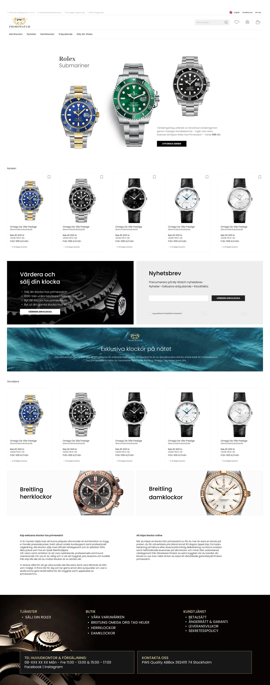

← All work
Web · Landing
Primewatch
A website landing page for Primewatch — a clean, conversion-focused layout, designed while working at Media Menu.
Overview
A focused landing page — clear hierarchy, one primary action, and a layout that keeps attention on the offer.
